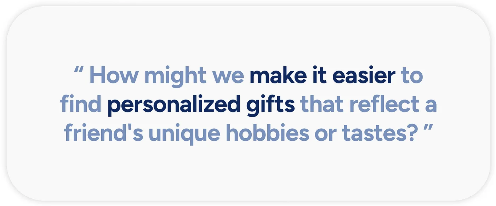
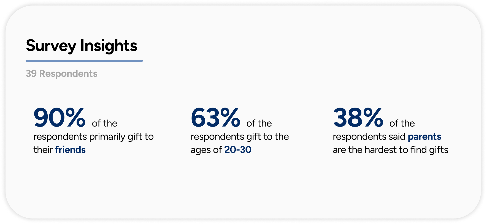
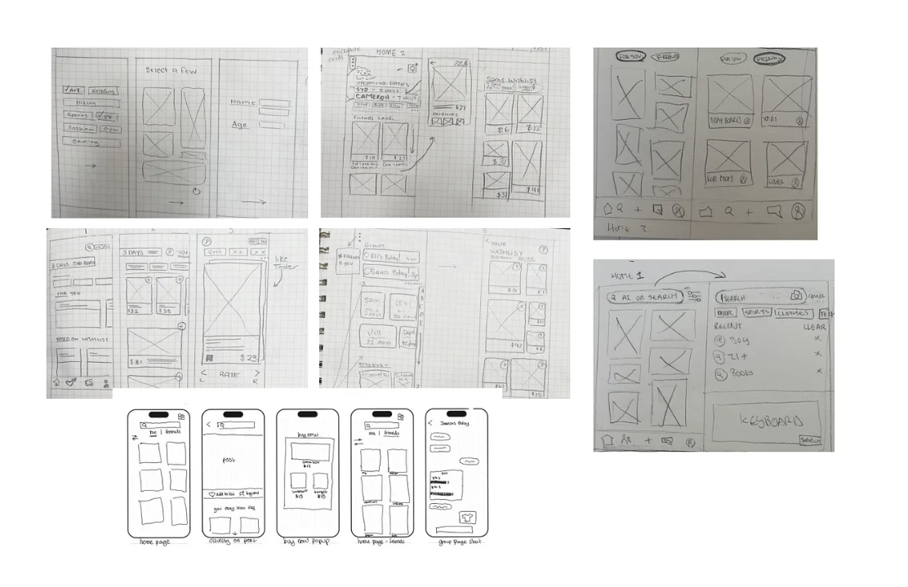
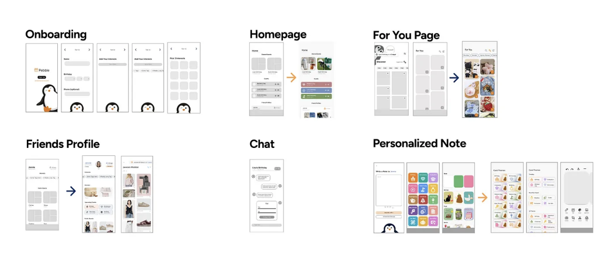
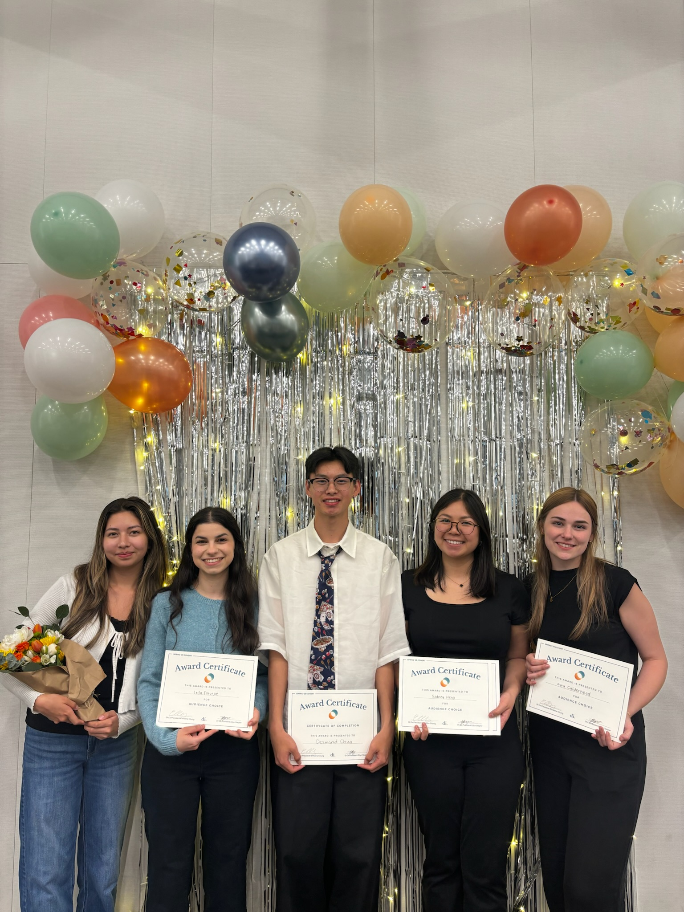

Pebble is a mobile app that helps users find the perfect gifts for loved ones through personalized profiles, curated “For You” pages, thoughtful notes, and customizable product boards.
Pebble is a mobile app designed to make gift-giving more thoughtful and effortless by offering a personalized experience for both givers and recipients. Developed over six weeks, the app centers on connection and creativity, allowing users to explore curated suggestions, organize ideas, and share meaningful gestures with ease. Through intuitive design and engaging interactions, Pebble transforms the often stressful task of finding the right gift into a joyful and personal experience.
Awarded: Audience Choice Award
Imagine: You meant to plan ahead, but forgot what you had in mind — and now your friend’s birthday is two days away. You’ve scrolled Amazon, skimmed Buzzfeed gift guides, even asked ChatGPT, but nothing feels right. A candle? Too basic. A funny mug? Already gave her one. Your cart’s full of last-minute, impersonal picks.

Research Goals:Our main research goal was to better understand how people approach gift-giving and to validate the idea that finding a meaningful and unique gift can be a difficult and time-consuming task. We aimed to explore the pain points in the gifting process and assess how users respond when faced with the challenge of selecting thoughtful gifts.
Research Methods:Our team adopted a mixed-methods research approach to better understand how individuals navigate the gift-giving process and the challenges they face.
We began with a survey that gathered 39 responses, helping us identify who users typically buy gifts for and their general gifting habits.
To gain deeper qualitative insights, we conducted seven one-on-one user interviews focused on uncovering the emotional and logistical aspects of choosing thoughtful gifts.

Additionally, we developed two user personas to represent our core audiences, one prioritizing speed and efficiency, and the other seeking a more collaborative and personal gifting experience.
A competitive analysis of four existing gifting platforms, Elfster, Giftagram, Tinggly, and Giftser, helped us identify common design patterns and potential areas for innovation.

Key Research Data & Findings Our survey revealed key quantitative data about user behavior, while interviews provided valuable qualitative insights into the emotional side of gifting. The findings confirmed that many people struggle to find gifts that feel truly personal, often defaulting to generic options due to time constraints or lack of inspiration.
Demographic Composition Most of our respondents identified as female, and this demographic skew was reflected in both the survey and interview responses. To better empathize with our users, we created two personas representing different gifting approaches, streamlined vs. emotionally driven.
Feature Matrix

After synthesizing our research insights, we identified a wide range of potential features. To clarify our priorities, we created a feature matrix that helped us visualize and evaluate key functionalities, including group gifting, customization options, interest-based tags, feed organization, and price comparison tools.
Low-Fidelity Sketches

From our low-fidelity prototypes, we used the feature matrix to guide our design decisions and prioritize the most impactful features.
Mid-Fidelity Sketches

The mid-fidelity features were designed to directly address key user pain points uncovered during research. By prioritizing upcoming events and important dates on the homepage, users are consistently reminded of relevant occasions, helping them stay organized and proactive. Additionally, the app streamlines the gift discovery process, making it easy for users to browse, select, and curate gifts they love. This not only enhances personalization but also reduces the stress and time typically associated with finding the perfect gift.
Participants (ages 19–22, primarily female-identifying students or young professionals) were asked to complete the following tasks:
1. Finding a friend’s wishlist
2. Sending a personalized note
3. Building their own wishlist or board
Testing revealed that while the core features were engaging, several usability issues emerged. Users found wishlists difficult to locate, the personalized note feature lacked intuitiveness, and the overall color scheme gave the app a “cheap” appearance, drawing unfavorable comparisons to platforms like Temu.

Our design system was built to reflect the friendly and approachable brand identity, anchored by the use of the Figtree sans-serif font, soft color palettes, and rounded components.
Initially featuring orange tones, the color scheme shifted to a blue-centered palette based on user feedback, particularly to avoid associations with brands like Temu.
To enhance accessibility and reduce eye strain, off-whites and deep grays were incorporated.
Soft, rounded icons and a minimal use of a round, friendly penguin mascot helped maintain visual cohesion across typography, layout, and components.
Onboarding / Profile & Saved Pins


Homepage & For You / Product Page


Friend's Profile / Chat Features


Creating a New Board / Creating a Personalized Note


